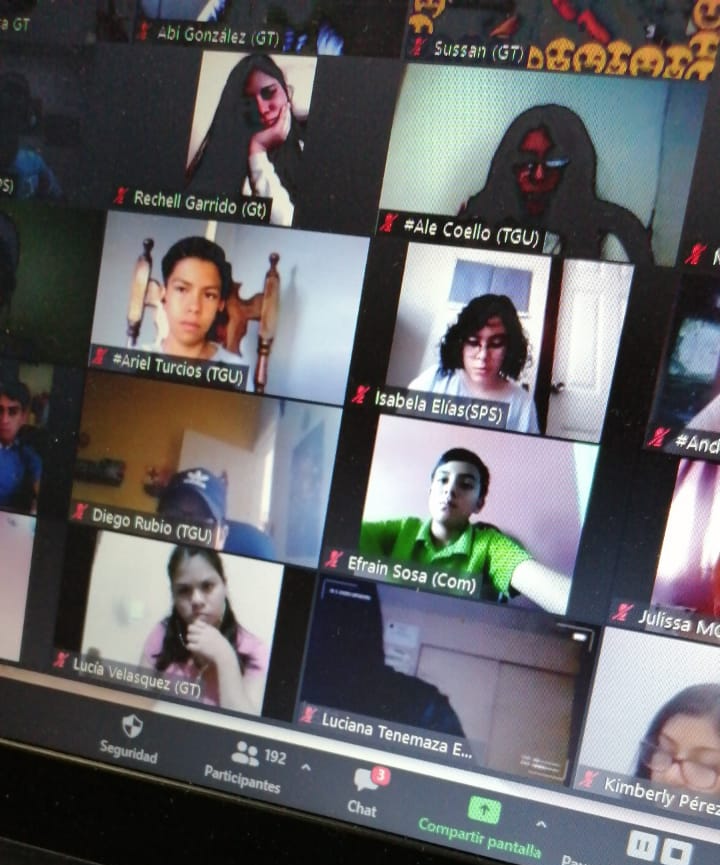
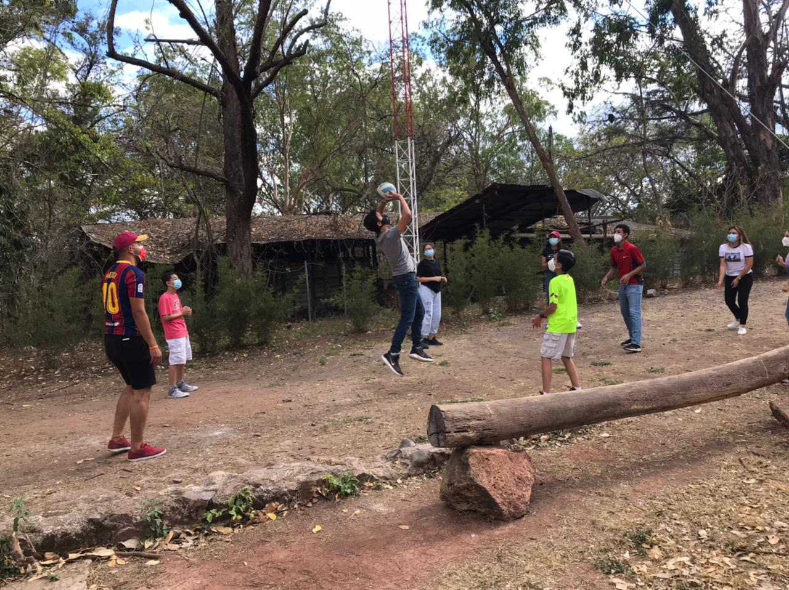

Just as the Lord says in Mathew 28:19-20
"Go ye therefore, and teach all nations, baptizing them in the name of the Father,
and of the Son, and of the Holy
Ghost:
Teaching them to observe all
things whatsoever I have commanded you: and, lo, I am with you always,
even unto the end
of the world. Amen."
And as we focus on young people and to follow this commandment , we have to do activities out of "normal" to take others to know what Christ did for them and to establish and grow in our friendship with them.
Some activities as having meetings just as mentioned on the Home Page, but that were just few examples. We have done many more such as not just meeting between the local group, but also a few weeks ago we had a conference were al Centralamerica was listening together about the word of God! In this same small activities were made to get to know each other and to talk about what was learned. 
That was one of many conferences we have during the quarantine that in different circumstances wouldn't be possible.
Know we are having hybrid activities between online and face-to-face meetings; we are starting to have physically meetings
but online meetings are still going to take place and more with the idea of meet with people from other countries just
as the past conferences have take place.

If you are interested in these activities and to be joining us, you can go to our social media accounts(links on the
footer) and contact us to know when and where these activities take place.